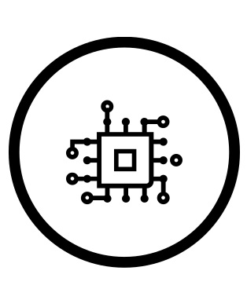

<!-- <app-nav></app-nav> -->
<!-- website navbar -->

<main>
  <mat-toolbar class="toolbar background-brown-dark" color="primary">

    <mat-toolbar-row style="height: 100px;">

      <div class="logo">
        
      </div>

      <div style="width: 80%">
        <div FxLayout="row wrap" fxLayoutAlign="end start">
          <button mat-button routerLink="/">Home</button>
          <button mat-button routerLink="/about">About us</button>
          <button mat-button routerLink="/admin-manager">Admin Manager</button>
          <button mat-button routerLink="/calendar">Calendar</button>
          <button mat-button routerLink="/contact">Contact</button>
          <button mat-button routerLink="/task-manager">Task Manager</button>
        </div>
      </div>
    </mat-toolbar-row>
  </mat-toolbar>
  <!-- The router outlet is where the different child components of the BaseLayout are rendered.  -->
  <router-outlet></router-outlet>
</main>

<app-footer></app-footer> <!-- website footer -->